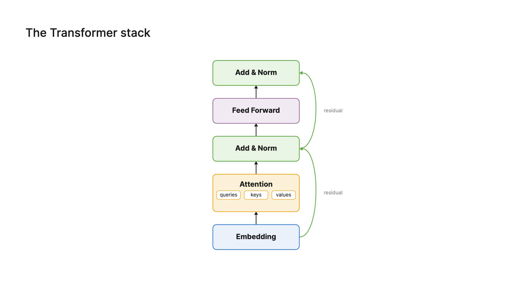
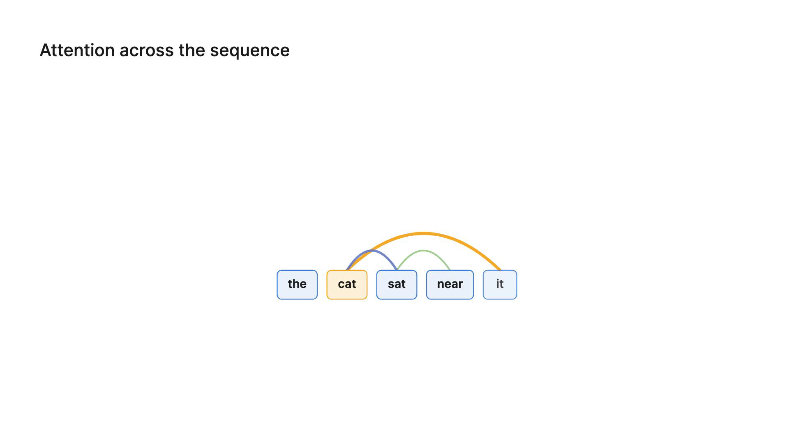
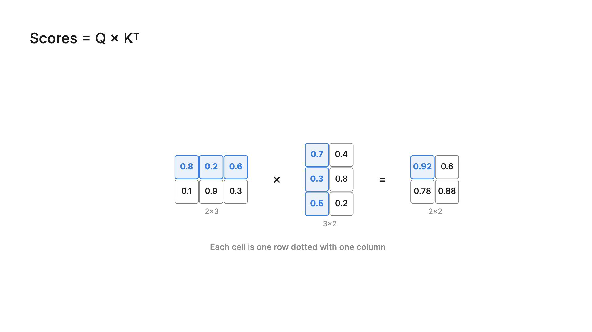
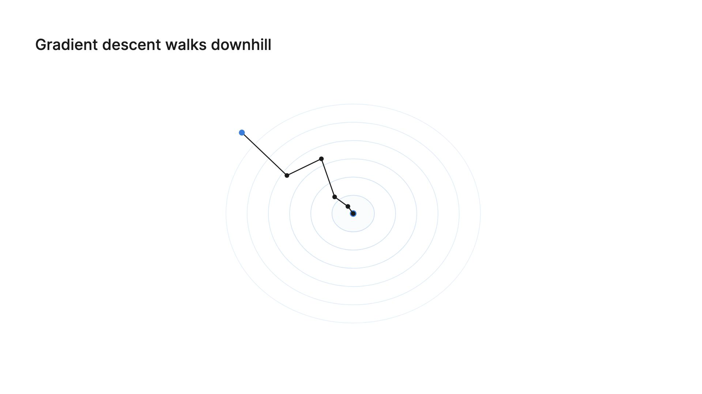

LLM → narrated explainer video
Give it a topic. Get a video that actually renders.
Decode writes the script, narrates it, and animates the scenes — timed to the voice, end to end from one prompt. The catch nobody mentions: a language model's output has to be made provably renderable. That's the part I built.
self-attention → the transformer stack → gradient descent, one generated lesson
The hard part
The LLM is the easy half.
The model never emits pixels or raw coordinates. It composes a scene from a fixed library of visual primitives, and a deterministic execution layer validates every scene before it renders. A scene that breaks a rule is caught and repaired — not shipped broken. Same input, same frames, every time.
collision
No two elements overlap — geometry is checked, not hoped for.
boundary + safe-margin
Nothing runs off-frame or crowds the edge.
text bounding boxes
Labels are measured, never guessed, so they never clip.
word-level timing
Every reveal fires on the narration word that names it.
Pipeline
Prompt in, MP4 out.
The author model is pluggable — OpenAI, Gemini, any OpenRouter model. The component contract is generated from the TypeScript source, so the model is only ever handed props that exist.
Range
One grammar, many figures.
Every frame below is generated by the same pipeline — no two elements overlapping, nothing off-screen, on one palette, by construction.



